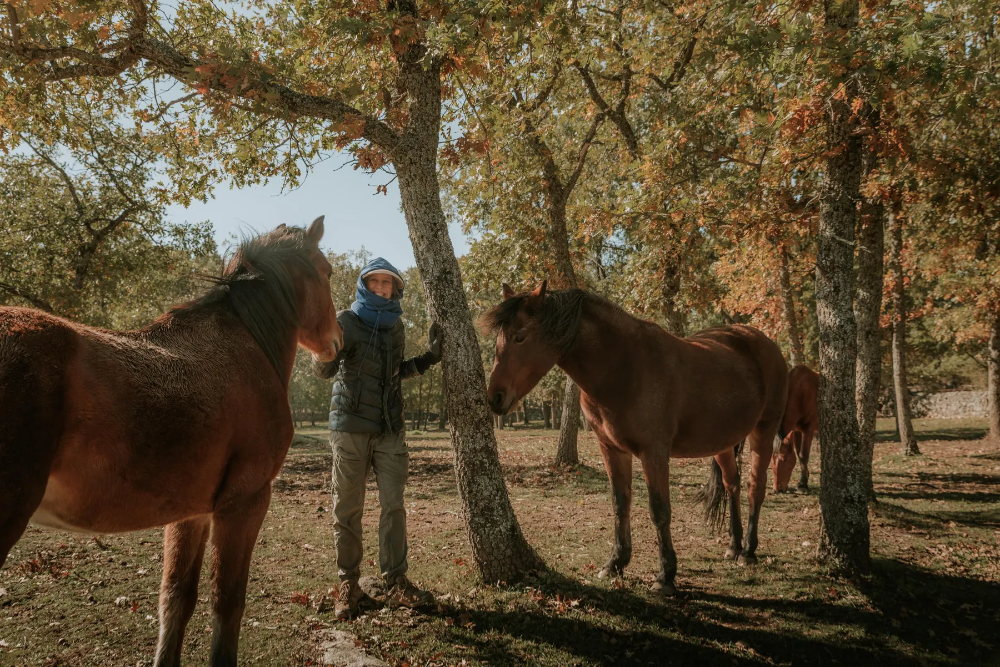
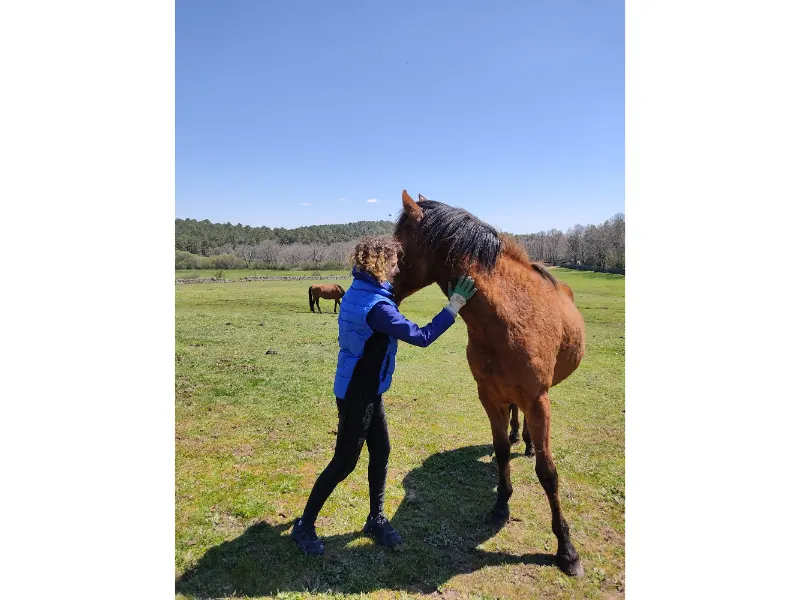

Alimentación
Forraje, pienso específico y suplementos según las necesidades de cada habitante.

Cómo ayudar
No hay una aportación pequeña cuando alimenta, cura o protege. Encuentra la manera de participar que mejor encaje contigo.
Seis caminos, un mismo propósito
Cuotas mensuales, microdonaciones, apadrinamiento, aportaciones puntuales, alianzas con empresas o el gran proyecto de una finca propia.
Desde 10 €/mes
Sostén instalaciones, alquileres, alimentación y urgencias de toda la familia Winston.
Más información
Un vínculo especial
Elige a uno de los habitantes, acompaña su historia y forma parte de su vida en libertad.
Más información
1 € al mes
Una microdonación sencilla que, sumada a muchas otras, cubre cuidados reales cada mes.
Más información
Ayuda inmediata
Contribuye por transferencia, Bizum o PayPal a alimentación, veterinarios y refugio.
Más información
Impacto compartido
Vincula tu empresa a un proyecto pionero de bienestar, educación y respeto animal.
Más información
El hogar definitivo
Ayúdanos a reunir a todas las manadas en una finca propia, segura y para siempre.
Más informaciónTambién formas parte de la manada
Compartir una historia, seguir el trabajo del Santuario, participar en una actividad o regalar tu tiempo como voluntario ayuda a que más personas conozcan lo que hacemos.

Haz que sus historias viajen
Conoce a los habitantes y comparte sus historias con personas que todavía no saben que el Santuario existe.
Conocer sus historias
Acompaña el día a día
Sigue los canales oficiales del Santuario y ayuda a que sus publicaciones lleguen más lejos.
Ir a Instagram
Ven a conocernos
Consulta las actividades y jornadas del Santuario y descubre nuestra forma de convivir con los animales.
Ver actividades
Regala tu tiempo
El trabajo diario también se sostiene con personas que ayudan con sus manos y su tiempo.
Conocer el voluntariadoA dónde va tu ayuda
Forraje, pienso específico y suplementos según las necesidades de cada habitante.
Atención veterinaria, tratamientos, curas, dentista y herrador cuando son necesarios.
Alquileres, mantenimiento de cercados, refugios, agua y seguridad de las fincas.
Capacidad de reaccionar ante rescates y situaciones veterinarias imprevistas.
El hogar definitivo
Con una aportación y un gesto tan sencillo como compartir, ayudas a acercar a las manadas a una finca segura para siempre.
Ir a la campañaEncuentra tu forma de sumar
Elige la forma que encaje contigo. Todas contribuyen al cuidado diario y al futuro del Santuario.
Antes de colaborar
Consulta el Centro de Transparencia para conocer qué información pública está disponible y cómo organizamos las distintas vías de colaboración.